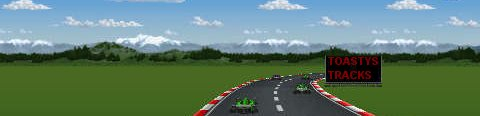
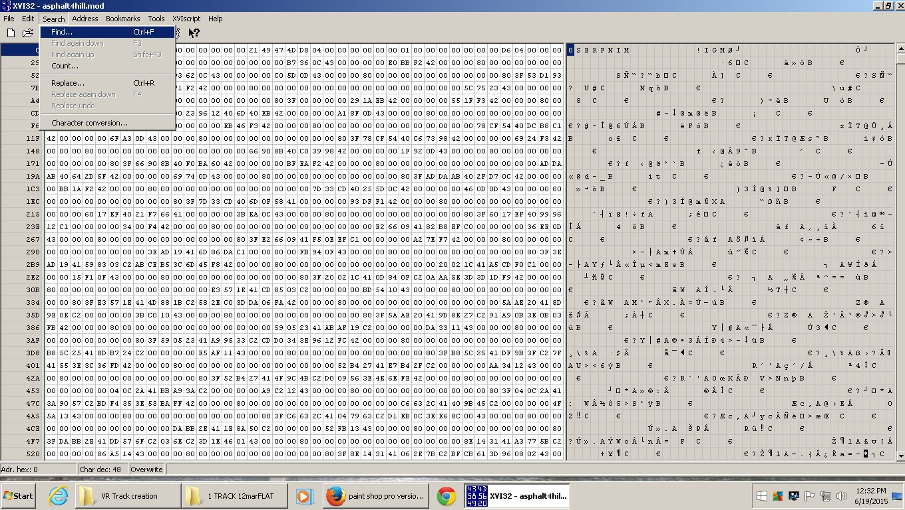
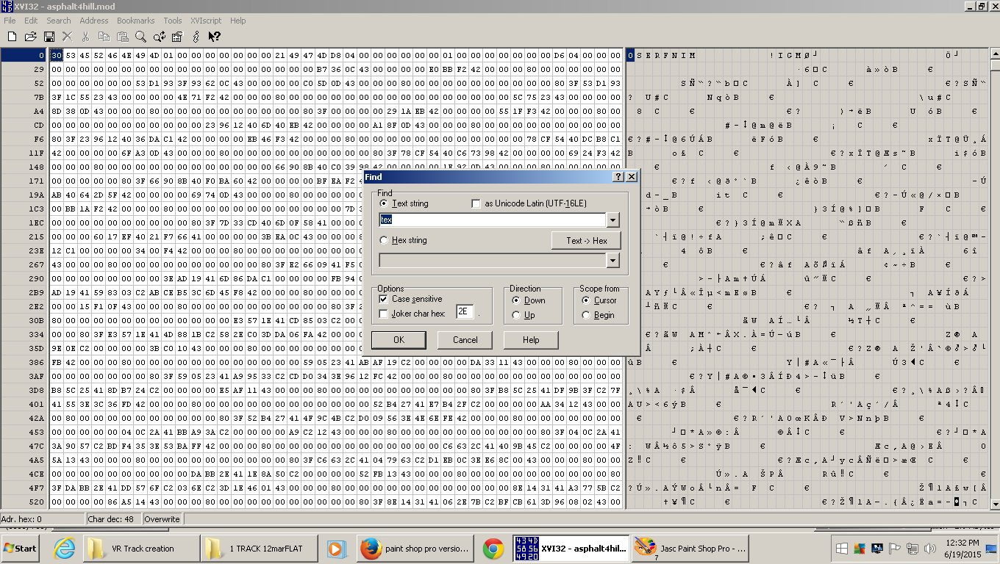
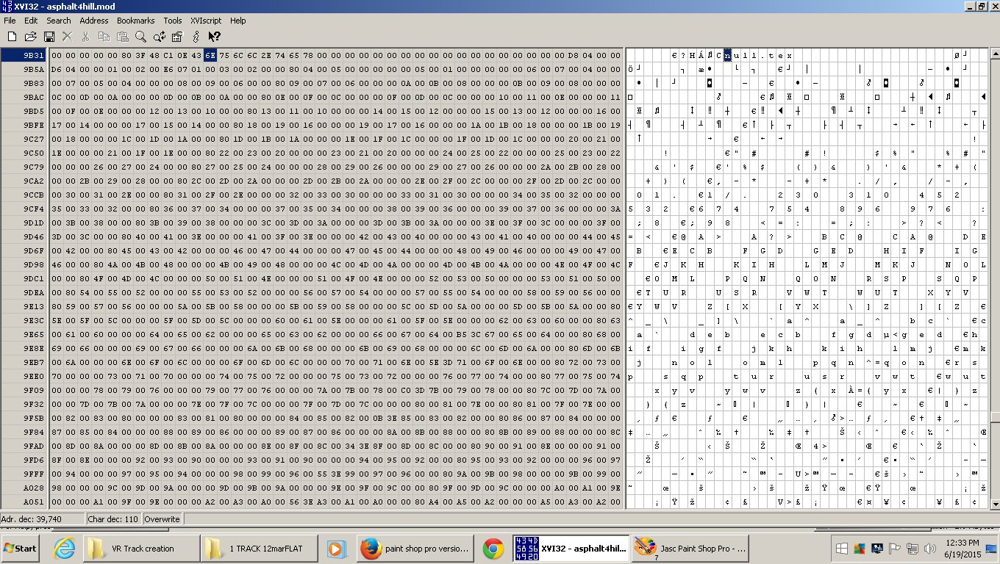
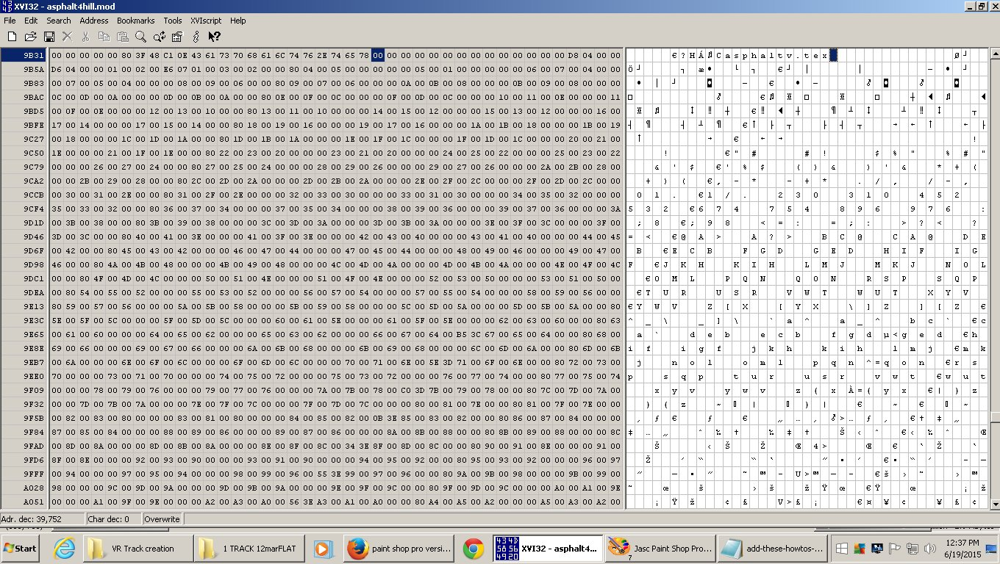
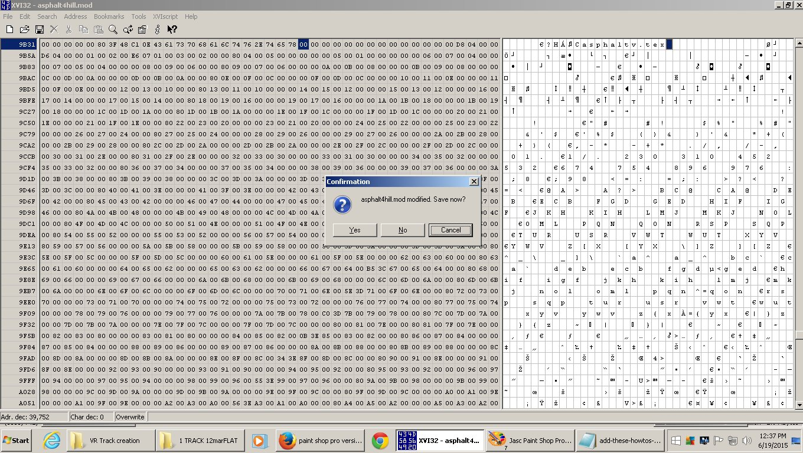
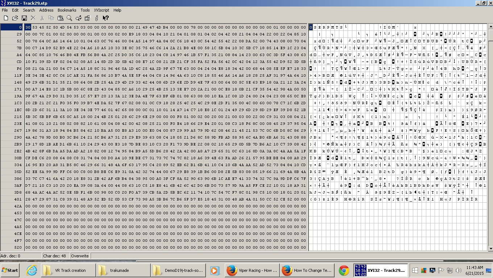
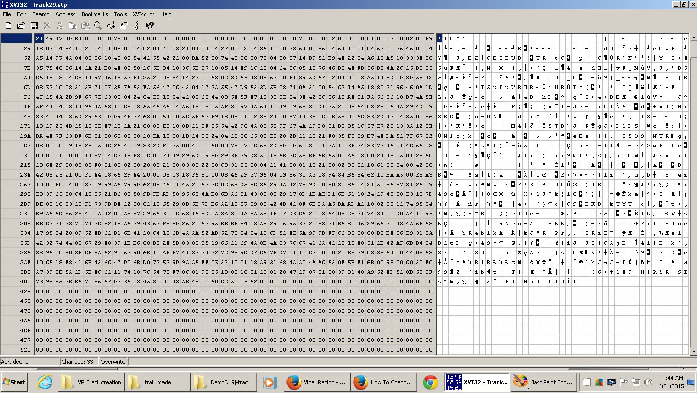

vnovak.com, captured 13 February 2020. Preserved in viper-racing-modding; see README.
The first tut covered making a "path" for your track in 3dsMax3.1.Links to all files required are there also.
vrtracktogametutpart1.html
The second part dealt with Zmodeler 1.07. Here is what you do next.

The following images will explain more steps in detail on how to get your track into Viper Racing.
For any dot mod file ( filename.mod ) you must have a 256x256 pixel uncompressed 32 bit tga file
in the same working folder so when you import your .mod file into Zmodeler it retains the mapped texture.
For Viper Racing use 8 digits maximum per tga file ( example: grass15j.tga ).
Best use a file name that describes the object ( dot mod file ),like for grass surfaces the grass15j.tga works
( description with partial date 15th of June -> 15j using 8 digits maximum ).Caps not required.
Now about the track you just exported from Zmodeler.
The texture file that you textured the track with must be in your working folder with your tga file.
IF your texture was a bmp for example you must convert it to a 256x256 pixel 32 bit uncompressed tga file.
Free non expiry trial version of paint Shop Pro 4.12 should have that option.
IMPORTANT:
When working in any file opened with a hex editor,NEVER backspace - IF you did,
just "x" out of it, click NO to the "save now",and start over.
To check or fix your texture name in your mod file here's what you do:
Open your objectname.mod file with your Xvi32 hex editor.
Check mark it to "always open with this file" in windows.
When open,click search/find.

Set search settings for tex as shown:
This will search for tex on the right side.

When you find tex on the right side and it says null.tex usually means that the original texture name
was probably lost somewhere in the saving and importing events.
Say your tga file was called asphaltv.tga.You must type asphaltv.tex in the "null.tex" spot.
Left click on the n in null and type asphaltv.tex

Don't worry about the letters going over the old ones and extending farther right in the boxes,
that's normal.

Now x out of it and click YES on the "save now" question.

Now when you eventually get it into the game,it won't be red.
( red is the default color for null.tex or wrong spelling of the .tex file,
or the object wasn't uv mapped [ textured ] to begin with ).
For textures Viper Racing uses a .tex file extension converted from 24 bit uncompressed
256x256 pixel .tga files ( maximum 8 digits ).
You convert your tga files to .tex files inside the tga2tex folder.
For the ones that have an "alpha channel, use the "tga2texALPHA.bat"
( just double click it for converting the alpha channel tgas to tex files ).
For the ones that do not have an "alpha channel, use the "tga2tex.bat"
( just double click it for converting the normal tgas to tex format ).
The tex files are all mixed in each folder,so just remember which have the alpha channel
because the normal tgas will lose 50% quality using the tga2texALPHA.bat file.
Then just open the folder and copy or cut and paste the correct .tex files into your "mkresfiles" folder.
Add them to the reslist.txt file also.
Say you have a road,grass and 1 scenery object to put the track together with.
The following example will show how to do all this and put the correct names into the 2 fooland.txt files.
Inside the "mkresfiles" folder,Right click on the "putstracktogether.bat",Left click "edit"
( open with notepad {if it didn't already} ),then replace the "trackname" word with the
name of your track ( try to keep it less than 8 digits ).
Close ( click the x ) /save changes? click YES.
If you add another texture file "tganame.tex" to your track ( mkres folder )
you MUST add it to your "reslist.txt" file located in the "mkresfiles" folder.
IMPORTANT:
NO spaces can be left after the last reslist entry or you will get an error when the "putstracktogether.bat" file
is activated last by the "Make-track.bat" file when you are putting your track together.
If you add another "objectname.mod" to your folder you MUST add it to one or both fooland text files.
If you can drive on it ,the "objectname.mod" MUST also be added to BOTH the "foolandsurface.txt" and
"foolandgraphic.txt" files in your main folder you are working in ( in this case "track2gamefiles" ).
If the "objectname.mod" is just for graphics,like a building or trees, ( not solid for driving on )
add it only to the "foolandgraphic.txt" file.
Examples inside both fooland files are shown.
Trees,buildings,signs,etc....( graphic objects ) have the code modobject(trees1row.mod, 3, 0, 0, 0)
The 3 code not a zero at the beginning means it's a graphic object.
If it was a 0 it would be a driveable surface like this:
modobject(mainroad.mod, 0, 0, 0, 0)
When putting the track together ( by double clicking Make-track.bat ) and you get an error,
read it carefully and try to figure out what you did wrong.
Could be as simple as misspelling a word or forgetting to add a mod to one of the fooland files or a tex file into the "reslist.txt" file.
If all went good,open your "out" folder that was automatically generated and copy and paste the "trackname.tra"
into your "Viper Racing/Data" folder ( all tracks and cars live there ).
If the trakname.tra size shows zero bytes,you muffed it somewhere.Check everything cause it don't take much to mess up.
As a faster way of doing it you could add it to your right click on the file / sendto choice.
Here is how to do the sendto thingy.
Inside the trackumade folder there is a jpg template for the correct size ( 257 pixels wide x 305 pixels high )
of the image you need for your track to show up in trackman when you left click on an add-on track name on the left.
For example you could take a screen shot of your start line area of your track and using
your paint program make an image of the correct pixel size of 257 by 305.
When that jpg is done it goes into your "Viper Racing/data" folder.
Don't forget to include both the 180x120 pixel stp image and 257x305 pixel jpg when you zip up your track ( trackname.tra ).
I can put your tracks for download on my website for free so everybody can have fun racing on them.
You can email them ( zip or rar ) to me at val5662@yahoo.com
Don't forget to include a readme with your real or ficticious name
( example Bob Smith or SmithyB - you get the idea... ) so you can be credited for your work.
The 257x305 pixel jpg and the 180x120 pixel stp file you make go into your "Viper Racing/Data" folder.
To create an stp image file for your track to show in the game lobby,
first you make a tga file exactly 180 pixels wide x 120 pixels high,export it to the "tga2stp" folder
with the option 24 bit uncompressed.
Exact name of track is required.Example: Track29.tra means the tga will be Track29.tga
Right click on the tga2stp.bat file ,click edit ( opens with notepad ) then type your
track name where it says Track29.
Close it / save changes then double click it to convert your Track29.tga into an stp file.
Now the stp file must be modified using the hex editor.
Double click the stp file,open,choose Xvi32.exe < your hex editor.
When it opens the stp left click on the first digit,top line on the right side and keep clicking the delete key
untill you have the "!" at the front of the line as shown in the 2 images below.


x out of that / save now - YES.
Now you can put the stp and jpg into your "Viper Racing/Data" folder.
Don't forget to zip all these files together; Track29.tra,Track29-readme.txt,Track29.stp and Track29.jpg and call it Track29.zip or Track29.rar ( for example ).